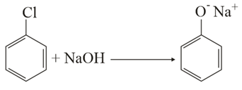

🧪 Alcohols Phenols & Ethers
43
Total Questions
5
Years
3
Clusters
Question Clusters
CHEM-ALCOPHEN-PHENOLS_REIMER_TIEMANN_KOLBE
Alcohols Phenols & Ethers: Phenols: Acidity, Reimer-Tiemann & Kolbe Reactions
CHEM-ALCOPHEN-ALCOHOLS_OXIDATION_LUCAS
Alcohols Phenols & Ethers: Alcohols: Preparation, Lucas Test & Dehydration
CHEM-ALCOPHEN-ETHERS_WILLIAMSON_CLEAVAGE
Alcohols Phenols & Ethers: Ethers: Williamson Synthesis & HI Cleavage
Year-wise Frequency
| Year | Questions | Frequency |
|---|---|---|
| 2021 | 13 | |
| 2022 | 5 | |
| 2023 | 11 | |
| 2024 | 13 | |
| 2025 | 1 |
Questions
Q48 (2021 Shift 2)
Which of the following polymer is used in the manufacture of wood laminates ?
CHEM-2021-0101-S2-Q048
Q37 (2021 Shift 2)
Metallic sodium does not react normally with:
CHEM-2021-0101-S2-Q037
Q46 (2021 Shift 1)
Which of the following compounds will provide a tertiary alcohol on reaction with excess of CH3 MgBr followed by hydrolysis ?

CHEM-2021-0101-S1-Q046
Q47 (2021 Shift 1)
An organic compound gives dark green colouration with ferric chloride. On treatment with A(C6H6O) CHCl3 and KOH, followed by acidification gives compound B. Compound B can also be obtained from compound C on reaction with pyridinium chlorochromate (PCC). Identify and A, B C.
CHEM-2021-0101-S1-Q047
Q60 (2021 Shift 2)
The number of compound/s given below which contain/s −COOH group is ___ . (Integer answer) (A) Sulphanilic acid (B) Picric acid (C) Aspirin (D) Ascorbic acid
Answer:
1CHEM-2021-0101-S2-Q060
Q46 (2021 Shift 2)
Maleic anhydride Maleic anhydride can be prepared by :
CHEM-2021-0101-S2-Q046
Q46 (2021 Shift 2)
Which one of the following phenols does not give colour when condensed with phthalic anhydride in presence of conc. H2 SO4 ?

CHEM-2021-0101-S2-Q046
Q46 (2021 Shift 1)
Identify the major products A and B respectively in the following reactions of phenol
CHEM-2021-0101-S1-Q046
Q47 (2021 Shift 2)
Ceric ammonium nitrate and CHCl3 / alc . KOH are used for the identification of functional groups present in _ and _ respectively.
CHEM-2021-0101-S2-Q047
Q44 (2021 Shift 1)
Given below are two statements : one is labelled as Assertion
CHEM-2021-0101-S1-Q044
Q51 (2021 Shift 1)
The reaction that occurs in a breath analyser, a device used to determine the alcohol level in a person's blood stream is 2 K2 Cr2 O7 + 8H2 SO4 + 3C2H6O →2 Cr2 (SO4)3 + 3C2H4O2 + 2 K2 SO4 + 11H2O If the rate of appearance of is min−1 at a particular time, the rate of disappearance of Cr2 (SO4)3 2. 67 mol C2H6O at the same time is mol min−1. (Nearest integer)

Answer:
4CHEM-2021-0101-S1-Q051
Q45 (2021 Shift 2)
Which one of the following reactions will not yield propanoic acid? OH−/H3O+
CHEM-2021-0101-S2-Q045
Q33 (2021 Shift 1)
Monomer of Novolac is :
CHEM-2021-0101-S1-Q033
Q38 (2022 Shift 1)
In the given reaction sequence, the major product ' C ' is : − − C8H10 HNO3 → A → Br2 B alcoholic → C H2 SO4 Δ KOH
CHEM-2022-0101-S1-Q038
Q46 (2022 Shift 2)
Hex- 4 -ene- 2 -ol on treatment with PCC gives ' A '. ' A ' on reaction with sodium hypoiodite gives ' B ', which on further heating with soda lime gives ' C '. The compound ' C ' is
CHEM-2022-0101-S2-Q046
Q45 (2022 Shift 1)
The major product in the reaction
CHEM-2022-0101-S1-Q045
Q50 (2022 Shift 2)
An antiseptic dettol is a mixture of two compounds 'A' and 'B' where has electrons and has A 6π B 2π electrons. What is B?
CHEM-2022-0101-S2-Q050
Q45 (2022 Shift 1)
Given below are two statements. Statement I : Phenols are weakly acidic. Statement II : Therefore they are freely soluble in NaOH solution and are weaker acids than alcohols and water. Choose the most appropriate option
CHEM-2022-0101-S1-Q045
Q46 (2023 Shift 1)
Decreasing order of dehydration of the following alcohols is
CHEM-2023-0101-S1-Q046
Q56 (2023 Shift 2)
Among the following the number of compounds which will give positive iodoform reaction is _____. (a) 1 -Phenylbutan- 2 -one (b) 2 -Methylbutan- 2 -ol (c) 3 -Methylbutan- 2 -ol (d) 1 -Phenylethanol (e) 3, 3 -dimethylbutan- 2 -one (f) 1 -Phenylpropan- 2 -ol

Answer:
4CHEM-2023-0101-S2-Q056
Q47 (2023 Shift 1)
The water gas on reacting with cobalt as a catalyst forms
CHEM-2023-0101-S1-Q047
Q57 (2023 Shift 2)
A compound when treated with phthalic anhydride in presence of concentrated yields . is ′X′ H2 SO4 ′Y′ ′Y′ used as an acid/base indicator. ′X′ and ′Y′ are respectively (1) Anisole, methyl orange (2) Salicylaldehyde, Phenolphthalein (3) Toludine, Phenolphthalein (4) Carbolic acid, Phenolphthalein
Answer:
556CHEM-2023-0101-S2-Q057
Q41 (2023 Shift 1)
20 mL of calcium hydroxide was consumed when it was reacted with 10 mL of unknown solution of H2 SO4. Also 20 mL standard solution of 0. 5 M HCl containing 2 drops of phenolphthalein was titrated with calcium hydroxide, the mixture showed pink colour when burette displayed the value of 35. 5 mL whereas the burette showed 25. 5 mL initially. The concentration of H2 SO4 is _______M. (Nearest integer)
Answer:
1CHEM-2023-0101-S1-Q041
Q48 (2023 Shift 2)
Compound A from the following reaction sequence is :
CHEM-2023-0101-S2-Q048
Q37 (2023 Shift 1)
Which of the following statement is correct for paper chromatography?
CHEM-2023-0101-S1-Q037
Q53 (2023 Shift 1)
In the cumene to phenol preparation in presence of air, the intermediate is (1) (2) (3) (4)
Answer:
12CHEM-2023-0101-S1-Q053
Q56 (2023 Shift 2)
Given below are two statements, one is labelled as Assertion A and the other is labelled as Reason R Assertion A:- Butylated hydroxyl anisole when added to butter increases its shelf life. Reason R:- Butylated hydroxyl anisole is more reactive towards oxygen than food. In the light of the above statements, choose the most appropriate answer from the options given below:- (1) Both A and R are correct and R is the correct (2) A is correct but R is not correct. explanation of A. (3) A is not correct but R is correct. (4) Both A and R are correct but R is NOT the correct explanation of A.
Answer:
1CHEM-2023-0101-S2-Q056
Q50 (2023 Shift 2)
A solution of in amyl alcohol has a....colour CrO5
CHEM-2023-0101-S2-Q050
Q55 (2023 Shift 2)
Cyclohexylamine when treated with nitrous acid yields (P). On treating (P) with PCC results in (Q). When (Q) is heated with dil. NaOH we get (R) The final product (R) is: (1) (2) (3) (4)

Answer:
2CHEM-2023-0101-S2-Q055
Q50 (2024 Shift 2)
Match List - I with List - II. List-I (Reactants) List-II Products
CHEM-2024-0101-S2-Q050
Q47 (2024 Shift 1)
Given below are two statement: Statements I : Bromination of phenol in solvent with low polarity such as CHCl3 or CS2 requires Lewis acid catalyst. Statements II : The Lewis acid catalyst polarises the bromine to generate Br+ . In the light of the above statements, choose the correct answer from the options given below :
CHEM-2024-0101-S1-Q047
Q40 (2024 Shift 2)
Consider the given chemical reaction : Product " A " is :
CHEM-2024-0101-S2-Q040
Q46 (2024 Shift 1)
Given below are two statements : Statement I : Piciric acid is 2,4,6 - trinitrotoluene. Statement II : Phenol - 2,4 - disulphonic acid is treated with Conc. HNO3 to get picric acid. In the light of the above statements, choose the most appropriate answer from the options given below :
CHEM-2024-0101-S1-Q046
Q47 (2024 Shift 1)
In Reimer - Tiemann reaction, phenol is converted into salicylaldehyde through an intermediate. The structure of intermediate is _____

CHEM-2024-0101-S1-Q047
Q60 (2024 Shift 1)
9.3 g of pure aniline upon diazotisation followed by coupling with phenol gives an orange dye. The mass of orange dye produced (assume 100\% yield/conversion) is _______ g. (nearest integer)
Answer:
20CHEM-2024-0101-S1-Q060
Q43 (2024 Shift 2)
The correct arrangement for decreasing order of electrophilic substitution for above compounds is :
CHEM-2024-0101-S2-Q043
Q48 (2024 Shift 2)
(Test) (Identification)
CHEM-2024-0101-S2-Q048
Q49 (2024 Shift 1)
Given below are two statements : Statement (I) : p-nitrophenol is more acidic than m-nitrophenol and o-nitrophenol. Statement (II) : Ethanol will give immediate turbidity with Lucas reagent. In the light of the above statements, choose the correct answer from the options given below :
CHEM-2024-0101-S1-Q049
Q47 (2024 Shift 2)
Phenolic group can be identified by a positive:
CHEM-2024-0101-S2-Q047
Q39 (2024 Shift 1)
In the given reactions identify the reagent A and reagent B
CHEM-2024-0101-S1-Q039
Q43 (2024 Shift 2)
𝐴 and 𝐵 formed in the following reactions are: CrO2Cl2 + 4NaOH →A + 2NaCl + 2H2O A + 2HCl + 2H2O2 →B + 3H2O
CHEM-2024-0101-S2-Q043
Q48 (2024 Shift 2)
Salicylaldehyde is synthesized from phenol, when reacted with
CHEM-2024-0101-S2-Q048
Q55 (2025 Shift 2)
Which one of the following, with HBr will give a phenol? (1) (2) (3) (4)
Answer:
3CHEM-2025-0101-S2-Q055